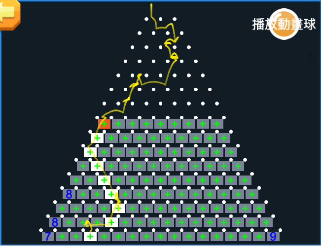

作品展示

Slot 輪帶
結構設計與展示

彈珠台
路徑生成、篩選、資料優化
擁有 12 年遊戲開發經驗。近七年以 Lua 配合 CocosCreator 開發遊戲為主。熟悉多種遊戲類型的前端邏輯與 UI 架構設計，具備獨立開發與團隊協作能力。
擅長程式結構優化、元件開發與程式碼品質管理，能有效提升專案開發效率，及遊戲運作的效能。
結構設計與展示
路徑生成、篩選、資料優化
Email：waynety2002@gmail.com